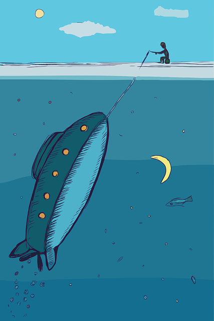

There once was a boy named Tom who loved to fish. Every day, he went to the lake with his little fishing rod, hoping to catch a big fish.
One morning, Tom cast his line into the water. Suddenly, something heavy tugged hard on his fishing rod!
Tom pulled and pulled, and to his surprise, he didn’t catch a fish — he pulled up a small old boat!
Tom climbed inside the boat, and suddenly it grew bigger and bigger until it was the biggest boat on the lake.
As Tom sailed happily, he heard a loud roar from the nearby forest.
Out stepped a huge lion! But the lion didn’t roar angrily. Instead, it looked at Tom with kind eyes.
Tom smiled and said, “Would you like to join me on this boat ride?”
The lion nodded, and together they sailed off on a great adventure.